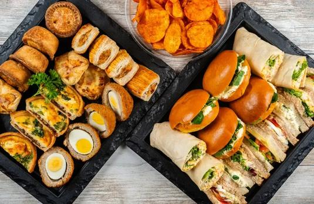

I learned this lesson the hard way at a wedding I catered maybe six years ago. The bride wanted a buffet. I calculated portions based on what I’d serve at a family dinner. You know, normal portions. Not huge, not tiny. Just a reasonable amount of food per person.
I ran out of food in 45 minutes.
There were like 30 people left in line when the last tray went empty. I wanted to die. The bride’s mother gave me a look that could melt steel. I ended up running to the nearest grocery store, buying everything they had, and cooking more food on the fly while the guests drank and pretended not to notice.
Turns out people eat differently at a buffet than they do at a seated dinner. Like, way differently. They pile their plates higher. They go back for seconds. They take a little of everything because it’s right there.
After that disaster, I started researching catering portion math. And I found this rough rule that has saved me ever since: buffet portions should be about 1.5 times what you’d serve at home, and plated dinners should be about 0.8 times.
Sounds backwards, right? Plated is less than home? Let me explain.
When you eat at home, you probably serve yourself a reasonable portion. Maybe a cup of pasta, a piece of chicken, some vegetables. That’s your baseline. At a plated dinner, portions are actually smaller because there’s multiple courses and everything is controlled. You’re not going back for seconds because there are no seconds. So you need less food per person than you think.
At a buffet, it’s the opposite. People take more because they can. They see the food and they want to try everything. Plus buffets usually don’t have strict portion control, so people fill their plates. You need extra.
The math is simple once you accept it. If your home recipe serves 4, that same recipe will serve about 2.5 to 3 people at a buffet. And it will serve about 5 people at a plated dinner. Same amount of food, completely different number of people fed.
I ran a test once. I made the same mac and cheese recipe for three different events. Home dinner with my family of 5 – the recipe said it served 6, and it was about right, a little leftover. Buffet at a community event – that same recipe fed maybe 3 people before it was gone. Plated dinner at a fundraiser – I stretched it to 8 servings by using smaller portions and adding a salad on the side.
Same recipe. Totally different yields.
So now I have a rule for myself. When someone asks me to cater an event, I ask three questions before I do any math. First, is it buffet, plated, or family style? Family style is somewhere in the middle, maybe 1.2x home portions because people pass dishes around but they don't usually go crazy. Second, how many people, and what's the breakdown of adults, kids, and teens? A teenager eats like an adult, maybe more. A kid under 10 eats about half of what an adult eats. Third, are there dietary restrictions? Because vegetarians and gluten‑free folks will eat from the same buffet but from different dishes, so you need to plan for both.
The portion planner tool I built does all this automatically. But even without it, you can do the math on a napkin.
I started with my home recipes. The pulled pork recipe I use feeds about 8 people at home. For a buffet, that same recipe would feed maybe 5. So I divided 50 by 5 and got 10. I needed 10 batches of that recipe. That felt like a lot, so I checked my math. Then I remembered the adult‑to‑kid adjustment. Adults eat the full portion. Teens eat maybe 0.8 of an adult. Kids under 10 eat about 0.5. I had 40 adults, 6 teens, and 4 little kids. That’s 40 plus 4.8 plus 2 equals 46.8 adult equivalents. Round up to 48.
48 adult equivalents divided by 5 servings per batch equals 9.6 batches. So 10 batches was right.
For the mac and cheese, my home recipe feeds 12. At a buffet, maybe 8. 48 divided by 8 is 6 batches. For coleslaw, home recipe feeds 16. At a buffet, maybe 10. 48 divided by 10 is 4.8, so 5 batches. Cornbread was similar.
I ended up cooking for two days straight. But nothing ran out. The birthday girl had leftovers to take home. Her mom hugged me and said it was the best party food she’d ever had.
That hug made up for the wedding disaster six years ago. Almost.
The thing about catering math that nobody tells you is that the portion factors are just starting points. They’re not laws. Every crowd is different. A group of construction workers will eat more than a group of yoga teachers. A late‑night buffet after drinking will get destroyed. A lunch buffet where everyone has to go back to work will be lighter.
I’ve learned to adjust based on the crowd. And I’ve learned to always make 10 percent extra. That’s my safety margin. If I calculate that I need 10 batches, I make 11. The extra food can be frozen or sent home with guests. Running out is much worse than having leftovers.
One time I didn’t make extra. It was a small event, maybe 20 people. I calculated exactly how much I needed. And then three extra people showed up. Unannounced. Just walked in and started eating. I ran out of food with like five people still in line. The host was embarrassed. I was mortified. Now I always add 10 percent. Always.
Another thing I learned about catering scaling is that you can’t just scale recipes and hope your equipment keeps up. If a recipe takes 30 minutes to bake at home, and you scale it to 10x, it’s not going to take 30 minutes in a bigger oven. It might take 45 minutes. Or an hour. Or it might need to be baked in batches because your oven isn’t big enough.
I have a small kitchen at home, remember? 8x10 feet. When I cater, I usually rent a commercial kitchen or use the college kitchen. But even then, I have to think about oven space. A commercial oven fits maybe four sheet pans at once. If I need 20 sheet pans of cornbread, that’s five batches. Each batch takes 20 minutes. That’s almost two hours of baking, not counting the time to mix and portion.
So I build a timeline. I work backwards from serving time. If dinner is at 6, I need everything cooked and held by 5. Then I figure out when to start each batch. It’s like planning a train schedule but with food.
The first few times I did this, I messed up the timing badly. I once finished cooking an hour after the guests started eating. They were standing around with empty plates, trying to be polite. The host kept coming into the kitchen asking how much longer. I wanted to crawl under a table.
Now I add a buffer to my timeline. If I think something will take 30 minutes, I schedule 45. If I think I need 2 hours, I schedule 3. Things always take longer than you expect. Always.
The portion planner tool helps with this because it estimates total cooking time based on batch size. But honestly, I still add my own buffer. I don’t trust any calculator that much.
Let me talk about plated dinners for a second, because they’re completely different. For plated, you want smaller portions because you’re serving multiple courses. An appetizer, a salad, a main, a dessert. People don’t need a huge piece of chicken when they just ate a salad and they’re about to eat cake.
I use 0.8 as my plated factor. But that’s for the main course. For appetizers, I use 0.5. For dessert, 0.6. For salad, 0.7. It’s not one number. It’s a whole system.
I once catered a plated dinner for 80 people. The main course was a chicken breast with roasted vegetables. My home recipe said it served 4. 80 divided by 4 is 20 batches. But with the 0.8 plated factor, I only needed 16 batches. That saved me maybe 15 pounds of chicken. The portions were perfect. Nobody complained about being hungry, and nobody left food on their plate.
The key with plated is consistency. Every plate needs to look the same. You can’t have some plates with a huge chicken breast and others with a tiny one. So you need to portion everything before you plate. I use a scale. 150g of chicken per plate, 80g of vegetables, 120g of potato. Every plate gets weighed.
Scaling for catering is not like scaling for home. At home, if you accidentally put an extra scoop of something on your plate, who cares. At a catered event, if you mess up portions, half the guests get too much and half get too little. That’s a recipe for unhappy people.
I’ve learned to treat catering scaling like a math problem with no room for error. I write everything down. I double‑check my calculations. I make a test batch of each recipe at scale before the actual event. That test batch has saved me so many times. Last year, I tested a scaled recipe for green beans and realized the cooking time was way off. If I hadn’t tested, I would have served raw beans to 60 people.
The tool I use for catering planning is the same Recipe Scaling Calculator I use for everything, but I also keep a notebook with my portion factors written down.
These numbers aren’t scientific. They’re just what’s worked for me after dozens of events. Your numbers might be different. The only way to know is to cater an event, run out of food, and adjust for next time. Or over‑cater and have too much leftovers. Either way, you learn.
I still have nightmares about that wedding buffet where I ran out of food. In the dream, I’m standing in an empty kitchen and there’s a line of people stretching out the door and all of them are holding empty plates and staring at me. I wake up sweaty.
But then I remember that I haven’t run out of food at a catered event in like four years. Because I finally learned the math. The portion factors. The 10 percent buffer. The test batches. The timeline padding.
Catering is just scaling with consequences. When you scale a recipe for yourself and it fails, you order pizza. When you scale for 80 people and it fails, you can’t order pizza. You have to fix it, or you disappoint a lot of people.
That pressure made me better at math. I used to be sloppy. I’d round numbers, skip steps, assume things would work out. Catering beat that out of me. Now I’m precise. Annoyingly precise. My husband says I measure things that don’t need measuring. I say that’s why I’ve never run out of food at a birthday party.
Anyway, the short version is this: for buffets, multiply your home portions by about 1.5. For plated, multiply by about 0.8. Add 10 percent extra for safety. Test before you scale. And don’t forget about your oven.
— Olivia
P.S. The bride from the wedding disaster? She still doesn’t know I ran out of food. Her mother does. But she’s not telling. Some secrets are worth keeping.
✅
✅
2,680 ✅
✅
✅
15